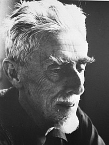

Maurits Cornelis Escher (17 June 1898 – 27 March 1972) was a Dutch graphic artist who made mathematically-inspired woodcuts, lithographs, and mezzotints. Despite wide popular interest, Escher was for long somewhat neglected in the art world, even in his native Netherlands. He was 70 before a retrospective exhibition was held. In the twenty-first century, he became more widely appreciated, with exhibitions across the world.
His work features mathematical objects and operations including impossible objects, explorations of infinity, reflection, symmetry, perspective, truncated and stellated polyhedra, hyperbolic geometry, and tessellations. Although Escher believed he had no mathematical ability, he interacted with the mathematicians George Pólya, Roger Penrose, Harold Coxeter and crystallographer Friedrich Haag, and conducted his own research into tessellation.
Early in his career, he drew inspiration from nature, making studies of insects, landscapes, and plants such as lichens, all of which he used as details in his artworks. He traveled in Italy and Spain, sketching buildings, townscapes, architecture and the tilings of the Alhambra and the Mezquita of Cordoba, and became steadily more interested in their mathematical structure.
Escher's art became well known among scientists and mathematicians, and in popular culture, especially after it was featured by Martin Gardner in his April 1966 Mathematical Games column in Scientific American. Apart from being used in a variety of technical papers, his work has appeared on the covers of many books and albums. He was one of the major inspirations of Douglas Hofstadter's Pulitzer Prize-winning 1979 book Gödel, Escher, Bach.